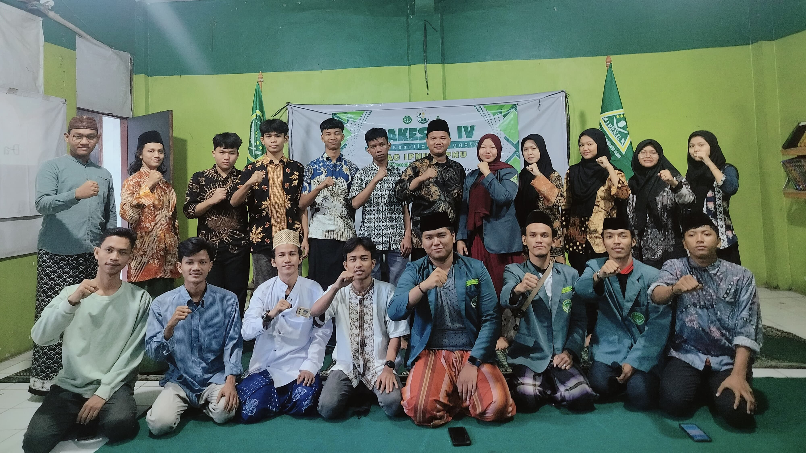
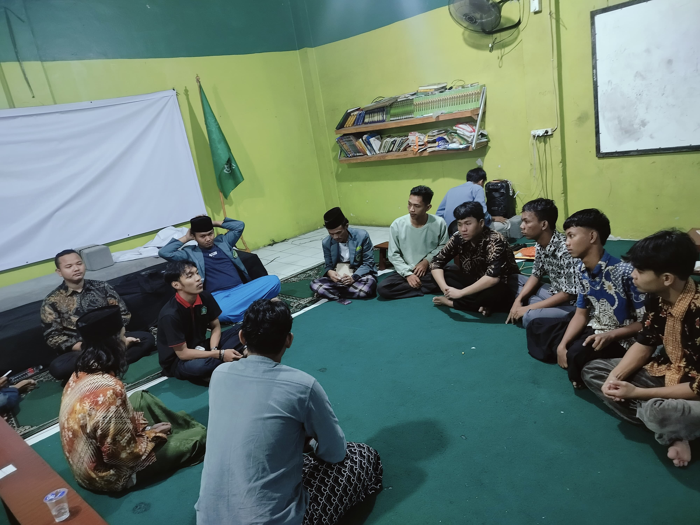
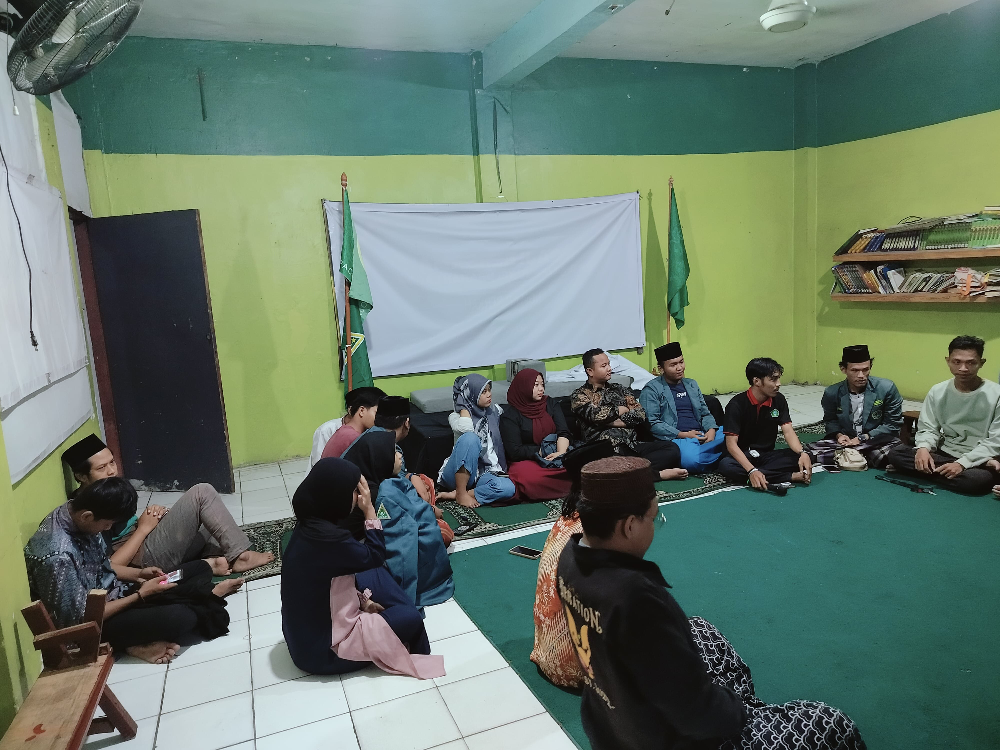
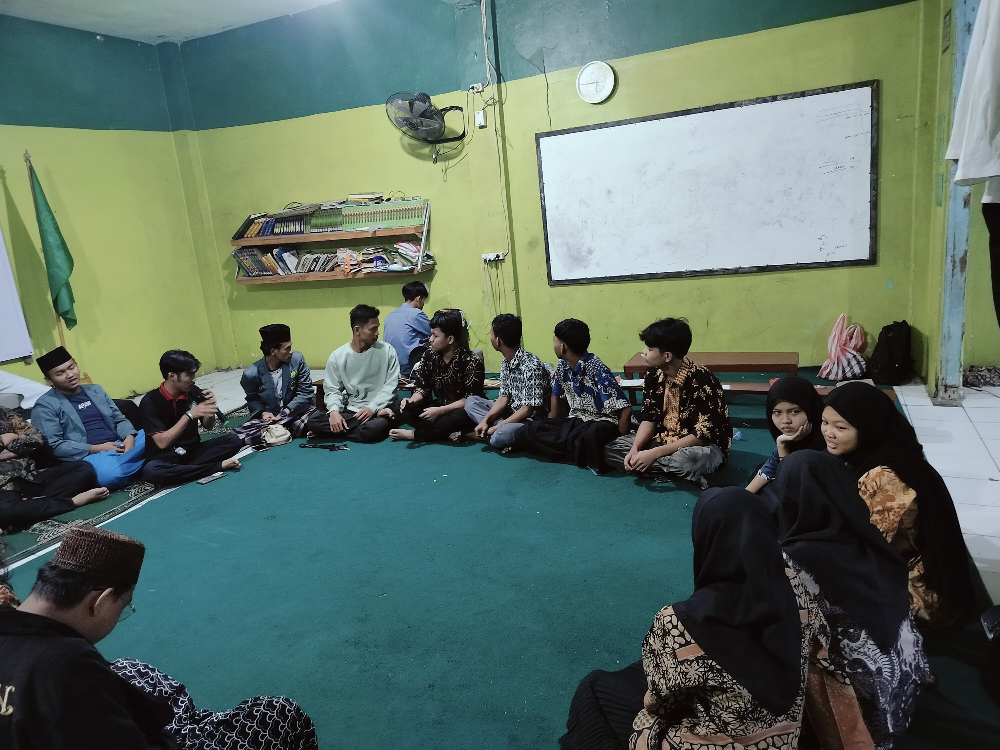
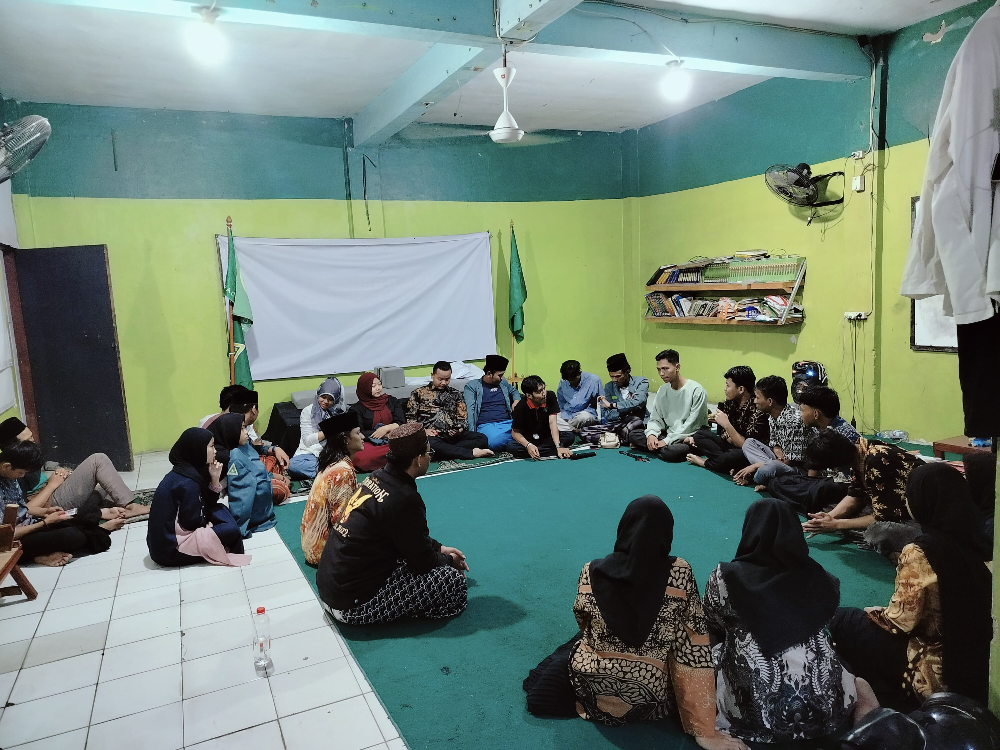
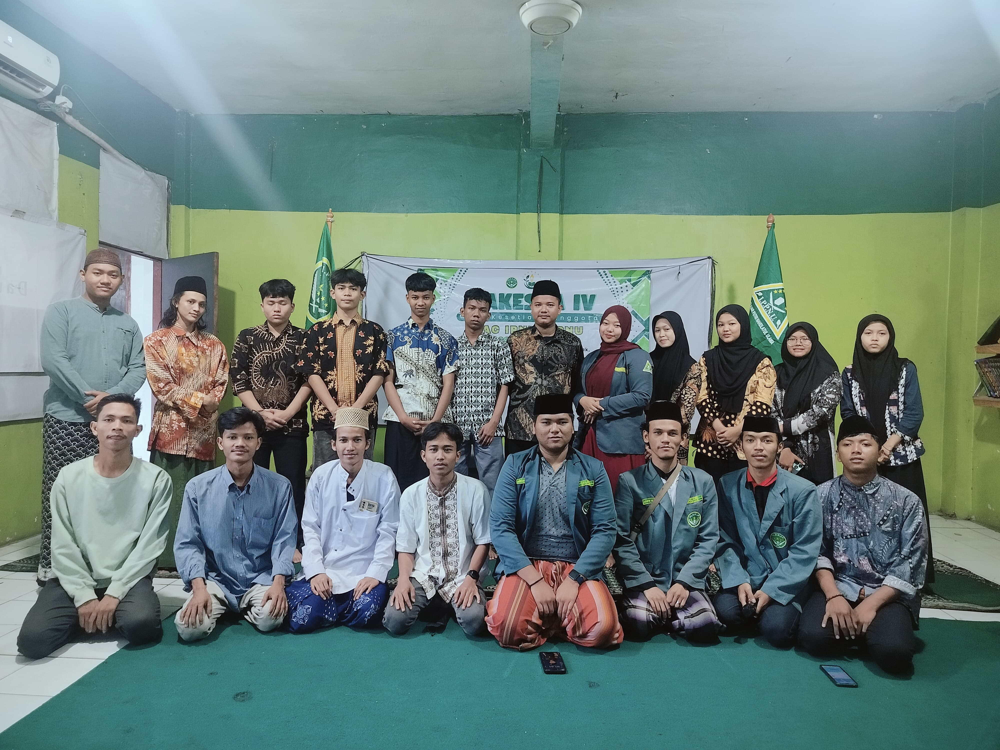
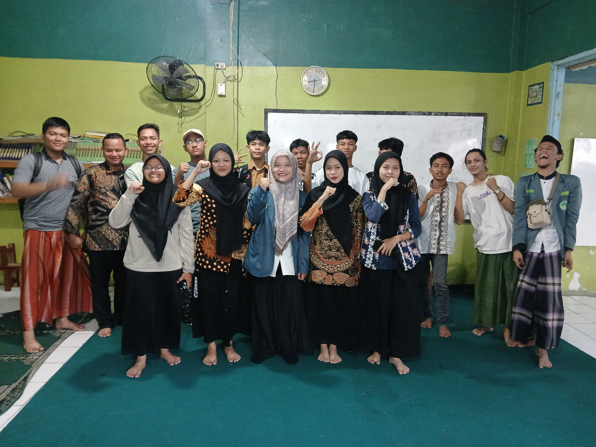

PAC IPNU IPPNU Kecamatan Koja Gelar MAKESTA di SMK Siliwangi: Mengawal Perubahan, Menjaga Aklhal, Menebar Inspirasi

Jakarta, 5 Juli 2025 - Pimpinan Anak Cabang Ikatan Pelajar Nahdlatul Ulama (PAC IPNU) dan Ikatan Pelajar Putri Nahdlatul Ulama (PAC IPPNU) Kecamatan Koja sukses menyelenggarakan Masa kesetiaan Anggota (MAKESTA) di SMK Siliwangi. Kegiatan ini mengusung tema "Mengawal Perubahan, Menjaga Akhlak, Menebar Inspirasi" dan diikuti oleh puluhan pelajar dan santri dari berbagai sekolah serta madrasah di wilayah kecamatan koja.
MAKESTA merupakan gerbang awal bagi para pelajar untuk mengenal, memahami, dan berproses di IPNU IPPNU. Selama kegiatan, para peserta mendapatkan pembekalan materi tentang keorganisasia, ke-NU-an, wawasan kebangsaan, serta pentingnya peran pelajar dalam menjaga moral dan memberikan inspirasi di tengah masyarakat.
Ketua PAC IPNU Kecamatan Koja dalam sambutannya menyampaikan bahwa pelajar NU harus menjadi garda terdepan dalam membawa perbuahan yang positif, tanpa meninggalkan akhlak yang mulia. "Kita harus hadir sebagai generasi yang cerdas, berakhlak, dan mampu menjadi inspirasi di lingkungan sekitar" ujarnya.
Acara berlangsung penuh semangat, ditandai dengan beberapa sesi pelatihan, diskusi interaktif, dan pembacaan ikrar anggota. Di akhir kegiatan, seluruh peserta melakukan foto bersama sebagai simbol kekompakan dan persatuan dalam perjuangan pelajar NU. Kegiatan MAKESTA ini diharapkan dapat melahirkan kader-kader muda IPNU IPPNU kecamatan Koja yang militan, berkarakter, dan mampu menjadi motor penggerak perubahan di tengah masyarakat, sesuai semangat tema yang diusung.
Galeri Gambar

gambar 1

gambar 2

gambar 3

gambar 4

gambar 5

gambar 6